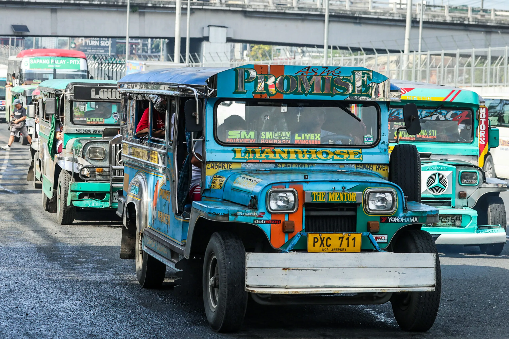
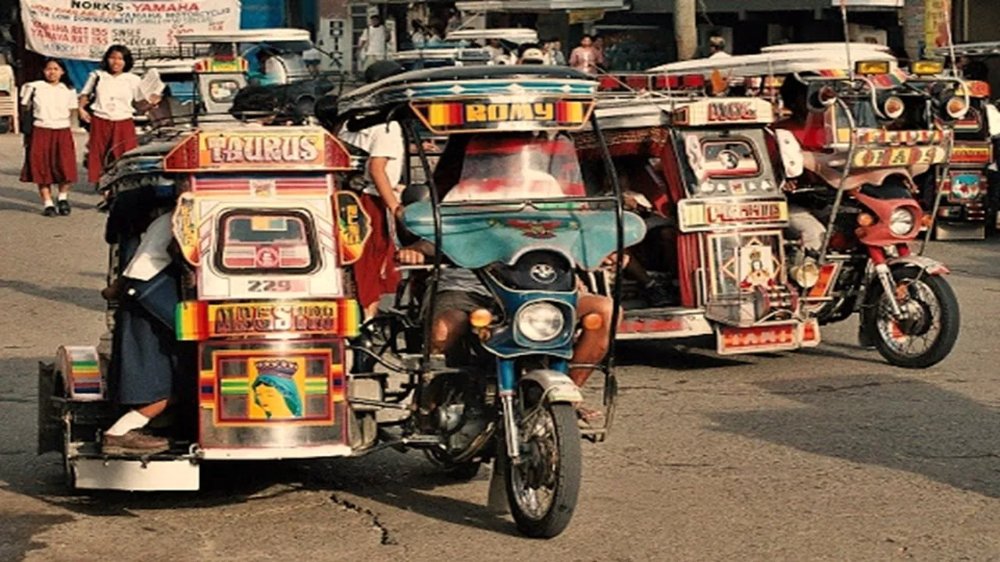
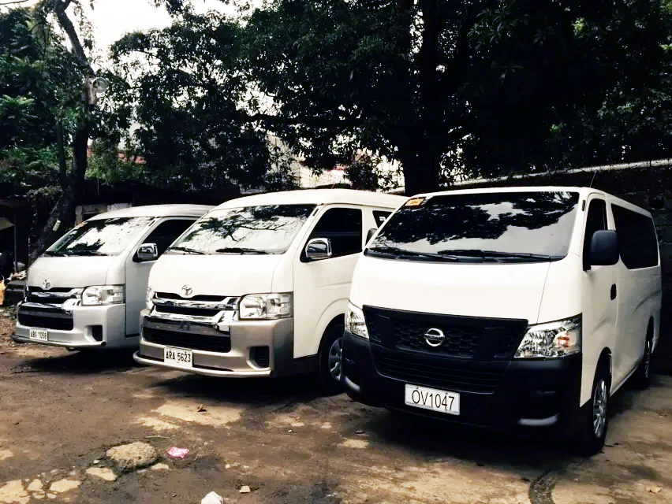
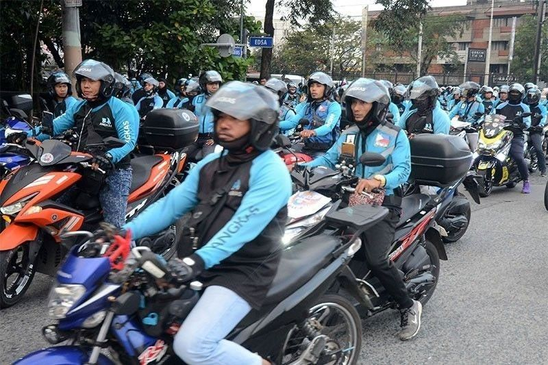

Jeepneys & UV Express
The primary mode of public transport connecting Metro Manila to major Rizal towns like Antipolo, Cainta, and Taytay. Highly affordable and frequent.

Tricycles (TODA)
The king of the inner roads. Tricycles are essential for reaching trailheads, waterfalls, and secluded resorts from the main town plazas.

Private Vehicles
The most convenient way to explore the Marilaque Highway or Tanay's highlands. Note that some mountain roads require vehicles with good clearance.

Motorcycles (Habal-Habal)
For solo travelers heading to remote hiking spots like Mt. Daraitan, local motorcycle taxis (Habal-Habal) offer quick, thrilling rides through rough terrain.